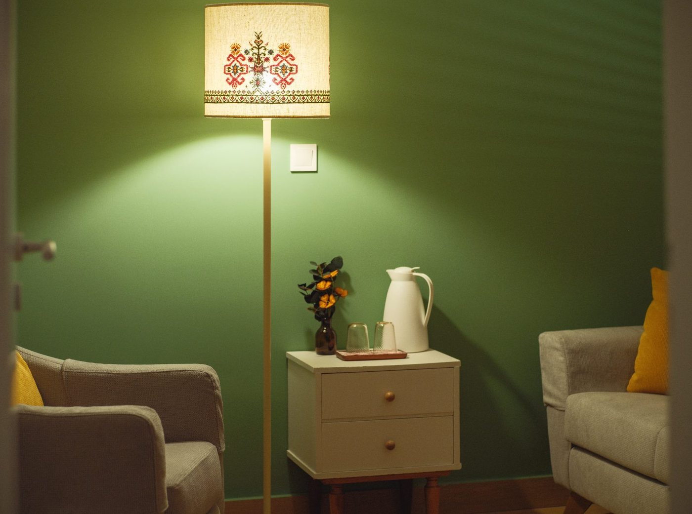

Ένας ασφαλής χώρος
για να ξετυλιχθεί το νήμα
Εκεί όπου η επιστημονική γνώση συναντά την ανθρώπινη σχέση — συστημική και συνθετική ψυχοθεραπεία για ενήλικες, εφήβους, ζευγάρια και οικογένειες.

Ο εσωτερικός κόσμος και οι σχέσεις, μαζί
Η θεραπευτική μου προσέγγιση βασίζεται στον συνδυασμό της εμπλουτισμένης συστημικής και της συνθετικής ψυχοθεραπείας, με στόχο τη δημιουργία ενός ασφαλούς και ευέλικτου πλαισίου για κάθε άνθρωπο, ζευγάρι ή οικογένεια.
Δουλεύω λαμβάνοντας υπόψη τόσο τα εσωτερικά ποιοτικά χαρακτηριστικά και τα προσωπικά βιώματα, όσο και τις σχέσεις, τα μοτίβα σύνδεσης και το ευρύτερο πλαίσιο μέσα στο οποίο αναπτύσσονται οι δυσκολίες.
Ιδιαίτερη έμφαση δίνεται στη δημιουργία μιας σχέσης ασφάλειας και εμπιστοσύνης, που υποστηρίζει τη συναισθηματική ρύθμιση, τη νευροβιολογική ισορροπία και τη σταδιακή αλλαγή προς λειτουργικότερους τρόπους ζωής και σύνδεσης.
Έξι πλαίσια συνεργασίας
Ατομικές συνεδρίες με ενήλικες και εφήβους, θεραπεία ζεύγους και οικογένειας, συμβουλευτική γονέων και βιωματικές ομάδες εκπαίδευσης γονέων. Σε κάθε περίπτωση, η δουλειά ξεκινά από το αίτημα που φέρνετε εσείς.
Μαριλένα Τζαννετάτου, MSc
Είμαι ψυχολόγος, απόφοιτη του Πανεπιστημίου του Στρασβούργου και με μεταπτυχιακό στην Παιδοψυχολογία από το Πανεπιστήμιο του Central Lancashire. Έχω ολοκληρώσει το τριετές πρόγραμμα στη Συνθετική Συμβουλευτική (COSCA) και εκπαιδεύομαι ως ψυχοθεραπεύτρια στην εμπλουτισμένη συστημική ψυχοθεραπευτική προσέγγιση SANE — System Attachment Narrative Encephalon®.
Έχω εργαστεί στον ιδιωτικό τομέα, στη δημόσια εκπαίδευση, σε δομές ψυχοκοινωνικής υποστήριξης και σε ΜΚΟ. Σήμερα εργάζομαι ιδιωτικά, στο γραφείο μου στο Μαρούσι ή διαδικτυακά, προσφέροντας συμβουλευτικές, ψυχοθεραπευτικές και ψυχοεκπαιδευτικές υπηρεσίες.
Πριν την πρώτη συνάντηση
Τηλεφωνικά στο 211 21 87 553, με μήνυμα στο 6944 813712, με email στο mtzannetatou@gmail.com ή συμπληρώνοντας τα στοιχεία σας στη φόρμα επικοινωνίας. Θα συνεννοηθούμε για μια πρώτη συνάντηση γνωριμίας, όπου θα δούμε μαζί τι σας απασχολεί και πώς μπορούμε να δουλέψουμε.
Η συνεδρία διαρκεί 50 λεπτά. Η συχνότητα καθορίζεται από κοινού και συνήθως αρχικά είναι εβδομαδιαία· στη συνέχεια προσαρμόζεται στις ανάγκες και τους στόχους σας.
Ναι. Οι συνεδρίες πραγματοποιούνται είτε στο γραφείο στο Μαρούσι είτε εξ αποστάσεως. Η διαδικτυακή επιλογή εξυπηρετεί όσους μένουν μακριά, ταξιδεύουν, ζουν στο εξωτερικό ή υπάρχουν ζητήματα μετακίνησης.
Ναι. Όλες οι υπηρεσίες προσφέρονται και στην Ελληνική Νοηματική Γλώσσα, χωρίς να απαιτείται παρουσία διερμηνέα — κάτι που εξασφαλίζει την εμπιστευτικότητα και προστατεύει την ποιότητα της θεραπευτικής σχέσης.
Ναι. Η εχεμύθεια είναι θεμελιώδης αρχή και δεσμεύει τον ψυχολόγο βάσει του κώδικα δεοντολογίας. Εξαιρέσεις προβλέπονται μόνο όταν υπάρχει σοβαρός κίνδυνος για τη ζωή του ίδιου του ατόμου ή τρίτων, ή όταν το επιβάλλει ρητά ο νόμος. Σε κάθε περίπτωση, ο θεραπευόμενος ενημερώνεται για την άρση του απορρήτου.
Αν βρίσκεστε σε κρίση ή σκέφτεστε να βλάψετε τον εαυτό σας, μην περιμένετε ραντεβού: καλέστε τη 1018 (Γραμμή Παρέμβασης για την Αυτοκτονία, 24/7) ή το 112.